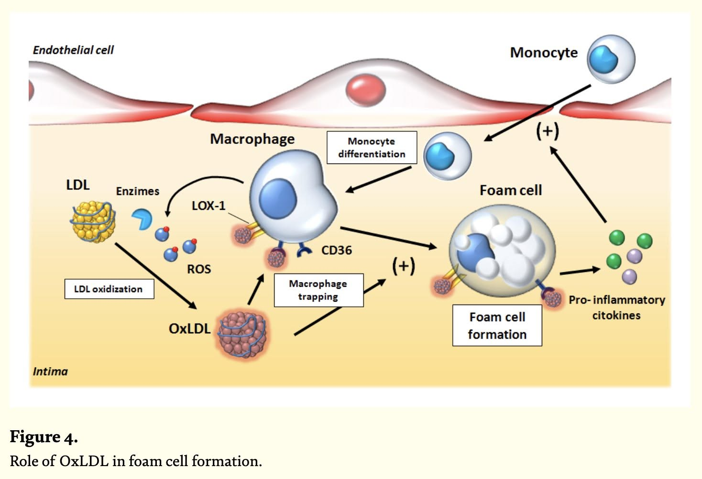

Atherosclerotic heart disease is the gradual build-up of fatty, cholesterol-rich deposits called plaque inside the walls of the arteries, including the coronary arteries that feed the heart muscle. Over years and decades the plaque grows, hardens, and can narrow the artery or suddenly rupture and trigger a clot, which is what causes a heart attack. It is the disease behind most heart attacks and strokes.12
The core of the process is surprisingly simple. Particles that carry cholesterol through the blood, and that wear a protein tag called ApoB, slip into the inner layer of the artery wall and get stuck. The body's reaction to those trapped particles is what turns a harmless fatty streak into an inflamed, growing plaque.34 The more of these particles there are, and the longer they circulate, the more plaque tends to form. Many other factors modify the speed of the process, and the group's admins stress that age itself is the largest one.56
Because the disease is silent for so long, it is usually underway long before anything is felt. That is the main reason this archive emphasizes understanding the biology early: the earlier the drivers are addressed, the more of the lifetime damage can be avoided.
What atherosclerosis is and why it is so common
Atherosclerosis means the arteries thicken and stiffen because of plaque. Coronary artery disease (CAD) is the version that affects the arteries of the heart. A group explainer by Gokhan Can divides CAD into four broad phases that unfold over many decades2:
- Soft plaque formation. Fatty deposits begin to accumulate, which can start as early as childhood or young adulthood. Blood flow usually stays adequate, so there are no symptoms.
- Hard plaque development. Some plaque hardens and calcifies, which can be picked up on imaging. Many people are still symptom-free.
- Ischemia. Arteries become narrowed enough that the heart muscle may not get enough blood during exertion, causing angina, breathlessness or fatigue, or sometimes "silent ischemia" with no symptoms.
- Overt CAD. Severe narrowing or blockage, with a higher risk of heart attack, serious arrhythmias or heart failure.
The explainer notes that the transitions are gradual and differ from person to person, and that some people develop significant disease without ever having symptoms.2
How common is it?
More common than most people assume. The REACT project, published in the New England Journal of Medicine and shared by Louis Nervegna, imaged more than 16,000 adults aged 18 to 70 with no known cardiovascular disease using vascular ultrasound and CT. About 57% had detectable plaque. Roughly 1 in 13 people in their 20s already had it, rising to about 9 in 10 by their 60s, and men developed silent disease around 5 to 10 years earlier than women. The write-up cautions against over-reading a single cross-sectional study, while Louis concludes from the graph that age is the biggest risk factor.6

A second study, in JACC Advances, looked at 1,033 asymptomatic adults aged 40 to 65 who were classified as low risk. 35.9% had coronary plaque and 25.3% had early calcification, and the prevalence rose linearly with LDL, non-HDL cholesterol and ApoB, even at levels below current guideline thresholds. Gokhan reads this as showing that keeping LDL low reduces the risk substantially.7
An NEJM review on the inherited basis of coronary disease, shared by Louis, adds that atherosclerotic cardiovascular disease will affect roughly 1 in 2 men and 1 in 3 women over a lifetime.13
How plaque forms, step by step
One article shared in the group describes a 12-step biology of atherosclerosis from the first sign of trouble to a heart attack4. The steps run roughly as follows:
- Endothelial dysfunction. The endothelium is the thin cell layer lining the artery. When it becomes dysfunctional it makes less protective nitric oxide, becomes more adhesive and more permeable to lipoproteins and immune cells, creating a pro-inflammatory setting.414
- Lipoprotein entry into the intima, the inner layer of the artery wall.
- Retention by proteoglycans. The particles get stuck in the wall instead of leaving again.
- Modification of retained lipoproteins. Trapped LDL is chemically modified, including by oxidation, which makes it harmful.14
- Activation of innate immunity, the immune system's first alarm response.
- Foam cell formation. Immune cells called macrophages take up the modified LDL through scavenger receptors and become lipid-laden foam cells, a hallmark of early lesions that later contribute to a necrotic core and plaque instability.14
- Smooth muscle migration and cap formation, building a fibrous cap over the lesion.
- Necrotic core formation. Dead cells and lipid accumulate in the middle of the plaque.
- Adaptive immune response.
- Plaque growth and angiogenesis, and calcification ("when plaque turns to stone").
- Plaque rupture or erosion.
- Thrombus formation and clinical events, when the silent process finally produces a heart attack.4


Oxidation, and what blood tests can and cannot tell you
The oxidation step has generated a lot of discussion. Gokhan's mechanism overview notes that oxidized LDL has been demonstrated in human atherosclerotic lesions by immunohistochemistry and mass spectrometry.14 Louis adds an important clarification: most LDL oxidation that matters happens after particles have entered the plaque, where no blood test can measure it. Oxidized LDL measured in the bloodstream does not predict cardiovascular risk once ApoB is accounted for, and antioxidant strategies aimed at circulating LDL have failed in randomized trials. Tom Dayspring calls the circulating test "useless" and suggests measuring ApoB instead.1516
The oxidation story should not be taken to mean that LDL is harmless unless oxidized. Louis shared a classic in-vitro study in which native, non-oxidized LDL made endothelial cells release about four times more superoxide, a damaging molecule, including from the enzyme that normally makes protective nitric oxide.17
Rupture, not just narrowing
Gokhan summarized a 2019 JACC review arguing that many heart attacks come from lesions that progress rapidly before they rupture, rather than from stable "mild" plaques. In the PROSPECT study, the lesions that later caused events grew from an average stenosis of about 32% to about 65%. Eventful lesions also had larger plaque volume (135 versus 58 mm3) and larger necrotic cores (20 versus 1 mm3). High-risk plaques that progressed carried a 28-fold higher likelihood of an acute coronary event.18 The practical message from that review is that what matters is the volume and composition of plaque, not only how narrow the artery looks.
Show data
| Lesions that caused events | Other lesions | |
|---|---|---|
| Total plaque volume | 135 | 58 |
| Necrotic core volume | 20 | 1 |
What drives it: ApoB particles and cumulative exposure
Why LDL and ApoB are considered causal
Gokhan's overview lists five lines of evidence that LDL is a cause, not a bystander: oxidized LDL in lesions, endothelial dysfunction and inflammation, foam cells, Mendelian randomization and familial hypercholesterolemia (lifelong high LDL leading to premature coronary disease), and the benefit of LDL-lowering therapies.14 Mendelian randomization uses genes that raise or lower a factor from birth as a natural experiment. In a chart from a European Atherosclerosis Society consensus statement, shared by Louis, variants acting through different pathways (LDLR, PCSK9, APOB, HMGCR, NPC1L1 and others) change coronary risk in proportion to the LDL change, the same linear relationship seen in statin trials. Lifetime relative risk reductions on the chart range from about 5% to 90%.19
Cholesterol itself is not the villain, as Gokhan explains. It is essential for cell membranes and hormones. The problem is having too many ApoB-containing particles in the blood, which makes it more likely they enter and get trapped in the artery wall.3
Louis points out that Lp(a) and VLDL (which is what triglycerides mostly measure) are also ApoB-tagged particles, so each adds to the total ApoB count just as LDL does.2021 A 2025 European Heart Journal paper he shared found that lipid-related risk is best reflected by the total count of ApoB-containing particles, largely regardless of particle type or size, with elevated Lp(a) adding further risk.22
Dose and duration: cumulative LDL exposure
Because the disease takes decades, the group emphasizes cumulative exposure. A study by Yamaji and colleagues (2024, Journal of Clinical Lipidology), summarized by Gokhan, analyzed over 8,000 people not on lipid-lowering drugs. Cumulative exposure was calculated as age times LDL-C (mg-year/dL). Endothelial dysfunction appeared above about 4,000, smooth muscle dysfunction above about 5,000, and carotid wall thickening and plaque at 6,000 or more. The suggestion is that even moderately raised LDL sustained for decades can cross these thresholds.10

Gokhan's earlier post makes the related point that the benefit of lowering LDL depends on both how much and how long. Reading a chart, he estimates about a 60% lifetime risk reduction for a 70 mg/dL drop sustained for 30 years, while stressing that effects beyond roughly 80 mg/dL of lowering are unknown and that this is his personal reading and plan, not a trial result.12 A Mendelian randomization study he summarized (Martin et al., 2024) also found that genetically higher ApoB shortened healthspan, defined as time to first chronic disease.23
Other drivers: age, insulin resistance, blood pressure, inflammation and more
The admins repeatedly caution that ApoB is one major factor among many, not the whole story. Louis writes that heart disease is multifactorial, listing age, genetics and family history, insulin resistance, chronic inflammation, endothelial dysfunction, oxidative processes, high blood pressure, smoking, and autoimmune and collagen diseases. He adds that some people are genetically protected despite risk factors, but that most of us are not that lucky.11
- Age. Louis calls age the biggest risk factor, by his estimate more than 10 times larger than LDL or ApoB, and argues that lowering ApoB is not a cure and leaves residual risk in every randomized trial, higher in older people.56 He also suggests that interventions that target the aging of the cardiovascular system are the future of cardiology, with taurine as an early, speculative example.24 A Mendelian randomization study he shared linked genetically longer telomeres to less coronary calcification, though he notes that such studies are fundamentally observational.25
- Insulin resistance. In a William Cromwell interview Louis shared, insulin resistance and LDL/ApoB are both described as independent causal risk factors, neither being "the true cause", so both need attention.2627 Louis explains that triglyceride-to-HDL ratio is an indirect marker of insulin sensitivity that tracks visceral and liver fat.27
- Blood pressure and the vessel wall. High blood pressure is on Louis's list of contributing factors.11 A shared post on brain health notes that high blood pressure, endothelial dysfunction and high LDL/ApoB are consistently associated with higher dementia risk, so the same drivers affect heart and brain.28
- Chronic inflammation. Gokhan's overview of non-traditional risk factors says atherosclerosis is now understood as a chronic inflammatory disease. It cites hs-CRP in the highest quartile with a 2 to 3 times higher heart-attack risk, and the CANTOS trial in which blocking IL-1 beta with canakinumab cut major events by 15% in high-risk patients.1
- Newer factors. Gum disease (a 1.1 to 2.2-fold higher coronary risk in meta-analyses), clonal hematopoiesis (acquired mutations in blood stem cells that, in the PESA cohort, preceded atherosclerosis), and mutated clonal cell populations in plaques themselves are all being studied.12930 A mouse study found microplastics raised plaque 63% in male mice without changing cholesterol, though mouse data should be interpreted cautiously.31
Louis also shared a graphic of 17 modifiable risk factors, noting that some are far better proven than others but that a reasonable approach is to target as many as possible.32
Nuances, debates and misconceptions
Is it LDL or inflammation?
This is an active debate. In a video debate summarized by Gokhan, Peter Libby argued that substantial residual inflammatory risk remains even when LDL is well controlled, with IL-6 playing a causal role. Derick Raal argued that LDL is the primary cause and inflammation a consequence, while both agreed there is value in addressing lipids and inflammation.33 Gokhan relays Tom Dayspring's view that the inflammatory response is secondary to invasion by ApoB lipoproteins.34 In a separate discussion of Subbotin's hypothesis that atherosclerosis begins with endothelial injury, Gokhan's opinion is that this does not contradict LDL lowering and that both strategies can coexist.35
"Lower LDL is linked to higher mortality"
Louis explains that the observed U- or J-shaped curve between ApoB or LDL and mortality does not hold up as causal at low levels in randomized trials and Mendelian randomization. In a Chinese cohort of about 36,500 people, the curve became linear after correcting for comorbidities, bilirubin and malnutrition, suggesting illness and wasting lower ApoB in older people rather than the reverse.3637 Nick Norwitz makes a similar point in a video Louis paraphrased, while also saying ApoB is necessary but perhaps not sufficient for disease and that in lean mass hyper-responders (LMHR) the absolute benefit of lowering ApoB is still unknown.38
HDL, triglycerides and particle size
Higher HDL tracks with lower risk in observational data, but Louis notes that every randomized trial of HDL-raising drugs failed on hard outcomes and genes for higher HDL do not lower lifetime risk. He views HDL as a crude proxy for insulin resistance.39 Triglycerides are atherogenic when carried on VLDL, but because VLDL is already counted in ApoB, Louis says to use ApoB or triglycerides rather than both. In BRIDGE-TIMI 73a, olezarsen cut triglycerides 64% with no change in plaque volume.2140 LDL particle size does not predict risk once particle number or ApoB is accounted for, which is why Gokhan advises against paying for NMR particle-size panels.414243
Residual risk
Lowering LDL is not a cure. Louis argues that residual risk persists in every trial, and the NEJM review he shared stresses proportionality: treatment intensity should scale with absolute risk rather than "lower for everyone".513
Can plaque shrink?
Louis argues, and Gokhan agrees, that atherosclerosis is not a one-way street. In a meta-analysis of 31 IVUS (intravascular ultrasound) studies with 4,997 patients, lipid lowering produced significant reductions in total and percent atheroma volume, with maximal regression at LDL below 80 mg/dL, and each 1% fall in percent atheroma volume was linked to 20% lower risk of major events (an association).44
The FLOWPROMOTE trial (JAMA Cardiology, 2026) randomized 104 statin-naive patients with stable CAD and imaged them with CT angiography. Atorvastatin 40 mg achieved LDL of about 70 mg/dL with roughly 14% total plaque regression, while rosuvastatin 40 mg plus ezetimibe 10 mg achieved about 42.5 mg/dL with about 21%. Lower achieved LDL tracked linearly with more regression.89 Louis lists earlier trials with total plaque reductions of about 5% (COSMOS, SATURN) up to about 17% (JAPAN-ACS).8
Two caveats apply. The shrinkage is mostly soft, lipid-rich plaque, while calcified plaque often rises, which is read as stabilization. And FLOWPROMOTE was an imaging study, not a trial of heart attacks.9 Louis also notes that, in a Medscape interview, about half of subjects regressed at an LDL near 80 mg/dL, and he thinks LDL lowering alone leaves much on the table.45 Several supplement or small-study claims in the group, such as nattokinase and gotu kola, come from limited data and need larger trials.4647
What this means for you
- Know that it is silent. With 57% prevalence in the REACT sample and plaque in more than a third of "low-risk" adults, feeling fine does not exclude plaque.67
- Measure the right particles. The admins favor ApoB because it counts all atherogenic particles; a National Lipid Association consensus suggests it is most useful when LDL-C and risk disagree, for borderline-risk patients deciding on a statin and when intensifying therapy.434849
- Consider imaging when risk is uncertain. The 2026 ACC/AHA lipid guideline, as summarized by Louis, supports selective coronary calcium scanning, measuring Lp(a) at least once, and using ApoB in certain groups.50 Joel Kahn's guide on interpreting high calcium results is shared in the group.51
- Know the guideline LDL goals. As quoted by Louis: below 100 mg/dL for borderline or intermediate risk, below 70 for high risk and below 55 for very high-risk secondary prevention. Discussing the right target with your doctor is the sensible next step.50
- Address more than one driver. Gokhan and Louis stress insulin sensitivity, blood pressure, inflammation, not smoking and healthy weight alongside lipids.51126
- Remember that earlier and longer matter. The group's admins argue that early, sustained lowering gives the largest lifetime benefit.1012
Frequently asked questions
Do I need symptoms to have heart disease?
No. Plaque is often silent for decades, and some people develop significant coronary disease without ever having symptoms.26
Is cholesterol itself bad?
No. Cholesterol is essential for life. The harm comes from having too many ApoB-containing particles, which can enter and be retained in artery walls.3
If my LDL is normal, can I still have a problem?
Possibly. Louis notes that LDL-C counts cholesterol mass rather than particles, so people can have a low LDL-C with many small particles and be at higher risk than the number suggests. ApoB catches that, and other drivers such as insulin resistance, blood pressure and inflammation also matter.1143
Can plaque really go away?
Trials show total plaque volume can fall, mostly soft plaque, with reductions of roughly 5% to 21% depending on how low LDL goes. Whether this translates into fewer events is supported by other trial data, but FLOWPROMOTE itself measured imaging.8944
Why do some people with high LDL never get plaque?
Louis, summarizing a Daniel Chong and Tom Dayspring video, says some people are genetically protected, but this is the exception and most people are not.11